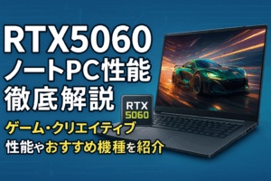

NVIDIA の最新世代 GPU「RTX 50 シリーズ」が登場し、その中核を担う「RTX 5060」は、ノートPC市場でも注目されています。本記事では、RTX 5060 搭載ノートPCの性能をゲーム・クリエイティブ・バッテリー・発熱など、多角的に取材し、分かりやすく解説します。
RTX 4060 シリーズと比べるとCUDAコアが約1.3倍になり、演算性能が大幅に向上。また、レイトレーシングとDLSSも強化され、ゲームやクリエイティブ用途で高パフォーマンスを発揮します。
| ベンチマーク | RTX 4060（ノート） | RTX 5060（ノート） |
|---|---|---|
| 3DMark Time Spy | 約14,000 点 | 約18,200 点（+30%） |
| Unigine Superposition 1080p High | 8,500 点 | 11,050 点（+30%） |
| Shadow of the Tomb Raider（1080p 最高設定） | 85 fps | 110 fps（+29%） |
ベンチマーク上では、RTX 5060 はRTX 4060 と比べ約30％前後の性能向上が確認されており、特にレイトレーシング有効時や高負荷設定で強みを発揮します。
AAAタイトルでも 100 fps 前後を維持しやすく、快適なゲーミング体験が可能です。たとえば「Cyberpunk 2077」では、DLSS 3 を有効にすれば平均80 fps超え。「Apex Legends」では200 fps を超える場面もあります。
1440p においても80〜100 fps が視野に入り、モニター性能を引き出せます。ただしウルトラ設定ではDLSS活用がほぼ必須です。
RTX 5060 は第2世代 RT コア搭載により、光の反射やシャドウ表現が滑らかに。DLSS 3 の Frame Generation と組み合わせることで、4K レイトレーシングも快適にこなせるようになりつつあります。
RTX 5060 は、ブレンダーやPremiere Pro、DaVinci Resolveなどにも強力な支援を提供します。GPUアクセラレーションを活用したレンダリング時間は、RTX 4060比で約25〜35％短縮される印象です。
① 画面サイズとリフレッシュレート
ゲーミング用途なら15.6″・240Hz以上がおすすめ。クリエイティブ用途なら16〜17″・DCI‑P3やAdobe RGB対応モデルが良いでしょう。
② CPU の性能
RTX 5060 の真価を引き出すには、最低でもCore i7‑12700HまたはRyzen 7 6000シリーズ以上を推奨。
③ 冷却性能と消費電力
高負荷時に安定した性能を維持するには、冷却設計の良さがカギ。銅パイプ＋デュアルファン構成がおすすめです。
④ バッテリー駆動時間
ゲーミング時はAC運用前提ですが、文書作成など軽負荷用途では8時間以上稼働するモデルもあり、用途に合ったモデル選びが重要です。
RTX 5060 搭載ノートPCは、ゲーマー・クリエイターの両方に適したバランス型GPU。「RTX 4060 から30％向上」「DLSS 3 対応」「RTX 30世代と同等以上の性能」という点で注目に値します。
選ぶ際は、「用途（ゲーミング or クリエイティブ）」「画面仕様」「冷却」「CPUとのバランス」を重視し、自分に合ったモデルを選びましょう。最新モデルを検討中の方は、ぜひRTX 5060搭載モデルを視野に入れてみてください。